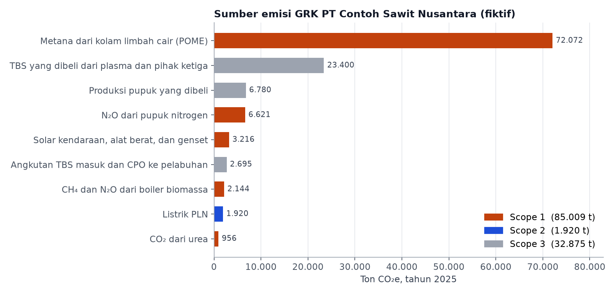
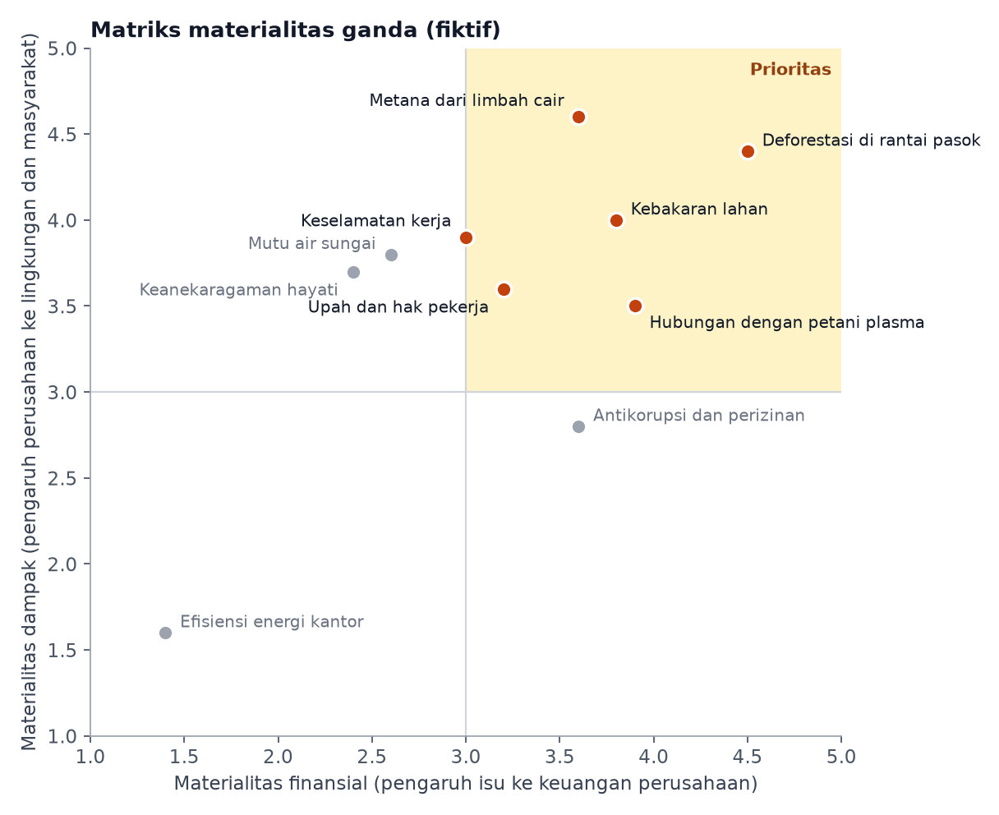

Inventaris Emisi GRK dan Uji Klaim Keberlanjutan Perusahaan Sawit Fiktif
Latar belakang
Emiten, perusahaan publik, dan lembaga jasa keuangan di Indonesia wajib menyusun laporan keberlanjutan berdasarkan POJK Nomor 51/POJK.03/2017. Salah satu angka yang paling disorot dalam laporan ini adalah emisi gas rumah kaca (GRK). Namun angka emisi baru bermakna jika dihitung dengan cara yang konsisten, sehingga bisa dibandingkan dari tahun ke tahun dan antarperusahaan. Untuk itu, sebagian besar perusahaan mengacu pada GHG Protocol, standar penghitungan emisi yang paling luas digunakan di dunia.
Project ini mempraktikkan seluruh prosesnya pada PT Contoh Sawit Nusantara, sebuah perusahaan sawit terpadu fiktif di Riau. Nama, data aktivitas, skor materialitas, dan klaim perusahaan ini dibuat sendiri, tetapi metode dan faktor emisinya mengikuti standar resmi, sehingga cara hitungnya bisa dipakai untuk perusahaan sungguhan. Pertanyaannya, berapa emisi GRK perusahaan dalam setahun, dari mana sumber terbesarnya, langkah apa yang paling efektif untuk menurunkannya, dan bagaimana memeriksa apakah klaim keberlanjutan perusahaan sesuai dengan datanya.
Profil perusahaan fiktif
| Komponen | 2024 | 2025 |
|---|---|---|
| Kebun inti (dikelola perusahaan) | 12.000 ha | 12.000 ha |
| Kebun plasma (milik petani mitra) | 8.000 ha | 8.000 ha |
| Pabrik kelapa sawit | 60 ton TBS/jam | 60 ton TBS/jam |
| TBS diolah, dari kebun inti | 228.000 ton | 240.000 ton |
| TBS dibeli dari plasma | 90.000 ton | 96.000 ton |
| TBS dibeli dari pemasok pihak ketiga | 48.000 ton | 60.000 ton |
| Solar | 1,15 juta liter | 1,20 juta liter |
| Pupuk nitrogen (kebun inti) | 1.150 ton N | 1.200 ton N |
| Listrik PLN (kantor dan perumahan) | 2.300 MWh | 2.400 MWh |
TBS adalah tandan buah segar. Rendemen minyak sawit mentah (CPO) diasumsikan 21% dan inti sawit 5% dari berat TBS. Seluruh kebun berada di tanah mineral, bukan gambut.
Metode
Langkah pertama adalah menentukan kegiatan mana saja yang emisinya dihitung sebagai emisi perusahaan. Dalam GHG Protocol, cara yang dipakai di sini disebut pendekatan kendali operasional. Artinya, semua kegiatan yang dikelola langsung oleh perusahaan, yaitu kebun inti, pabrik, kendaraan, dan kantor, dihitung sebagai emisi perusahaan. Kebun plasma dan pemasok pihak ketiga tidak dikelola langsung, sehingga emisinya masuk ke Scope 3.
- Scope 1 adalah emisi langsung dari kegiatan perusahaan, yaitu metana dari kolam limbah cair pabrik (POME), solar, N₂O dan CO₂ dari pupuk, serta CH₄ dan N₂O dari boiler biomassa.
- Scope 2 adalah emisi dari listrik yang dibeli dari PLN.
- Scope 3 adalah emisi di rantai nilai, yaitu TBS yang dibeli dari plasma dan pihak ketiga, produksi pupuk yang dibeli, serta angkutan TBS dan CPO.
Selain ketiga scope di atas, ada satu jenis emisi yang dilaporkan terpisah, yaitu CO₂ dari boiler pabrik. Pabrik membangkitkan listriknya sendiri dengan membakar serat dan cangkang sawit, dan CO₂ dari pembakaran ini berasal dari tanaman yang menyerap CO₂ saat tumbuh. Karena itu, GHG Protocol meminta CO₂ ini dilaporkan sebagai CO₂ biogenik dan tidak dijumlahkan ke Scope 1. CH₄ dan N₂O dari pembakaran yang sama tetap masuk ke Scope 1.
Setelah semua sumber dihitung, setiap gas diubah menjadi setara CO₂ (CO₂e) agar bisa dijumlahkan. Pengubahannya memakai potensi pemanasan global 100 tahun dari IPCC AR5, yaitu 28 untuk CH₄ dan 265 untuk N₂O. Artinya, 1 ton metana dihitung sama dengan 28 ton CO₂. Cara hitung dan faktor emisi untuk setiap sumber bisa dilihat pada tabel berikut.
| Sumber emisi | Cara hitung dan faktor emisi | Acuan |
|---|---|---|
| Metana POME | 0,65 m³ POME per ton TBS × 50 kg COD per m³ × 0,25 kg CH₄ per kg COD × 0,8 (kolam anaerobik dalam) | IPCC 2006, Vol. 5 Bab 6 |
| Solar | 2,68 kg CO₂e per liter | IPCC 2006, Vol. 2 Bab 3 |
| N₂O pupuk | 1% N pupuk menjadi N₂O-N secara langsung, ditambah emisi tidak langsung dari penguapan (10% × 1%) dan pencucian (30% × 0,75%) | IPCC 2006, Vol. 4 Bab 11 |
| CO₂ urea | 0,20 ton C per ton urea | IPCC 2006, Vol. 4 Bab 11 |
| CH₄ dan N₂O boiler | 0,19 ton serat dan cangkang per ton TBS × 15 GJ per ton; 30 kg CH₄ dan 4 kg N₂O per TJ | IPCC 2006, Vol. 2 Bab 2 |
| Listrik PLN | 0,80 ton CO₂ per MWh | Asumsi |
| TBS yang dibeli | 0,15 ton CO₂e per ton TBS | Asumsi |
| Produksi pupuk | 4,0 ton CO₂e per ton N, 1,0 per ton P₂O₅, 0,6 per ton K₂O | Asumsi |
| Angkutan | 0,10 kg CO₂e per ton-km | Asumsi |
Faktor bertanda asumsi dipakai untuk penyederhanaan. Untuk laporan sungguhan, faktor emisi listrik sebaiknya memakai nilai jaringan terbaru dari Kementerian ESDM, dan emisi TBS yang dibeli dihitung dari data pemasok. Solar juga dihitung sebagai solar fosil murni, padahal solar di Indonesia sudah bercampur biodiesel.
Setelah emisi dihitung, isu keberlanjutan yang perlu diutamakan dalam laporan dipilih dengan cara yang disebut materialitas ganda. Setiap isu dinilai dari dua sisi. Sisi pertama adalah seberapa besar dampak kegiatan perusahaan terhadap lingkungan dan masyarakat, misalnya pencemaran sungai atau hilangnya hutan. Sisi kedua adalah seberapa besar isu itu bisa memengaruhi keuangan perusahaan, misalnya kehilangan pembeli atau terkena denda. Isu yang nilainya tinggi di kedua sisi menjadi prioritas.
Hasil inventaris emisi juga dipakai untuk dua hal lain. Pertama, untuk menghitung seberapa jauh emisi bisa diturunkan dengan beberapa langkah, yaitu mengolah limbah cair menjadi biogas, memasang PLTS atap, dan mengurangi pupuk nitrogen. Kedua, untuk memeriksa kebenaran klaim perusahaan. Dalam project ini dibuat tiga contoh klaim yang biasa muncul di siaran pers, misalnya "pabrik kami memakai 100% energi terbarukan". Setiap klaim lalu dicocokkan dengan angka emisi yang sudah dihitung, untuk melihat apakah klaim itu benar, berlebihan, atau belum bisa dibuktikan.
Hasil
Sepanjang 2025, PT Contoh Sawit Nusantara mengeluarkan sekitar 85.000 ton CO₂e dari kegiatannya sendiri (Scope 1), 1.900 ton dari listrik PLN (Scope 2), dan 32.900 ton dari rantai nilainya (Scope 3). Di luar angka itu, pembakaran serat dan cangkang di boiler melepas sekitar 112.900 ton CO₂ biogenik yang dilaporkan terpisah.

Sumber emisi terbesar adalah metana dari kolam limbah cair pabrik. Setiap ton TBS yang diolah menghasilkan sekitar 0,65 m³ limbah cair yang kaya bahan organik. Di kolam terbuka, bahan organik ini diuraikan bakteri tanpa oksigen dan menghasilkan metana, gas yang dalam 100 tahun memerangkap panas 28 kali lebih kuat dari CO₂. Dari kolam limbah saja, emisinya mencapai sekitar 72.000 ton CO₂e, lebih dari dua puluh kali emisi solar seluruh kendaraan dan genset perusahaan. Di Scope 3, sumber terbesar berasal dari TBS yang dibeli dari petani plasma dan pemasok pihak ketiga.
| Indikator | 2024 | 2025 | Perubahan |
|---|---|---|---|
| Emisi Scope 1 dan 2 (t CO₂e) | 80.778 | 86.929 | naik 7,6% |
| Emisi Scope 3 (t CO₂e) | 29.688 | 32.875 | naik 10,7% |
| CPO yang dihasilkan (ton) | 76.860 | 83.160 | naik 8,2% |
| Intensitas Scope 1 dan 2 (t CO₂e per ton CPO) | 1,051 | 1,045 | turun 0,5% |
Intensitas emisi adalah emisi dibagi produksi. Angka ini membantu membandingkan kinerja ketika produksi berubah, tetapi tetap perlu dilaporkan bersama emisi totalnya.
Emisi perusahaan naik 7,6% dari 2024 ke 2025, karena TBS yang diolah bertambah. Intensitasnya hampir tidak berubah, karena cara pengolahan limbahnya juga tidak berubah. Jadi, setiap kali produksi CPO bertambah, metana dari kolam limbah juga ikut bertambah.
Isu yang paling penting

Skor 1–5 untuk setiap isu juga fiktif. Dalam praktiknya, skor ini disusun dari wawancara dengan pemangku kepentingan, kajian risiko, dan data operasional.
Matriks ini dibaca dari dua arah. Semakin ke kanan, semakin besar pengaruh isu itu terhadap keuangan perusahaan. Semakin ke atas, semakin besar dampak perusahaan terhadap lingkungan dan masyarakat. Garis di nilai 3 membagi matriks menjadi empat kotak, dan isu di kotak kanan atas menjadi prioritas karena penting dari kedua sisi.
Ada enam isu di kotak prioritas. Deforestasi di rantai pasok berada paling kanan, karena pembeli dan pasar ekspor seperti Uni Eropa makin ketat mensyaratkan minyak sawit yang bebas deforestasi. Jika syarat ini tidak terpenuhi, perusahaan bisa kehilangan pembeli. Metana dari limbah cair berada paling atas, sejalan dengan hasil inventaris yang menunjukkan bahwa kolam limbah adalah sumber emisi terbesar. Pengaruhnya ke keuangan saat ini masih sedang karena pajak karbon belum berlaku, tetapi posisinya bisa bergeser ke kanan jika aturan itu mulai diterapkan. Kebakaran lahan juga tinggi di kedua sisi, karena selain merusak hutan dan menimbulkan kabut asap, perusahaan bisa terkena sanksi sampai pencabutan izin.
Tiga isu prioritas lainnya berkaitan dengan manusia. Hubungan dengan petani plasma penting karena plasma memasok sekitar 24% TBS yang diolah pabrik, sehingga konflik dengan petani bisa langsung mengganggu pasokan. Upah dan hak pekerja serta keselamatan kerja berdampak besar pada ribuan pekerja kebun dan pabrik, dan makin sering diperiksa dalam audit pembeli maupun sertifikasi.
Isu di luar kotak prioritas tetap perlu diperhatikan. Mutu air sungai dan keanekaragaman hayati berdampak cukup besar, tetapi pengaruhnya ke keuangan perusahaan dinilai masih kecil. Isu seperti ini mudah terlewat dalam laporan, padahal bisa cepat berubah menjadi masalah keuangan jika terjadi pencemaran besar atau aturan diperketat. Sebaliknya, antikorupsi dan perizinan dampaknya ke lingkungan tidak langsung, tetapi berpengaruh besar ke keuangan karena menyangkut izin usaha. Efisiensi energi kantor berada di kiri bawah karena dampak dan pengaruhnya sama-sama kecil. Karena itu, isu ini cukup dibahas singkat dalam laporan, dan tidak boleh sampai menutupi pembahasan tentang kolam limbah yang emisinya jauh lebih besar.
Seberapa jauh emisi bisa diturunkan?
Misalkan perusahaan menetapkan target menurunkan emisi Scope 1 dan 2 sebesar 30% pada 2030 dibanding 2025. Kalkulator di bawah memperlihatkan pengaruh tiga langkah pengurangan emisi, dengan asumsi jumlah TBS yang diolah tetap seperti 2025.
Langkah pengurangan
Biogas diasumsikan menangkap 90% metana dari limbah yang diolah.
Hasil
| Emisi Scope 1 dan 2 | – | t CO₂e |
|---|---|---|
| Dibanding 2025 | – | |
| Intensitas | – | t CO₂e/t CPO |
Cara paling ampuh untuk menurunkan emisi adalah menangkap metana dari limbah cair. Mengolah sekitar 45% limbah cair menjadi biogas sudah cukup untuk mencapai target 30%, sedangkan mengganti seluruh listrik PLN dengan PLTS atap hanya menurunkan emisi sekitar 2%. Pengurangan pupuk nitrogen sebesar 30% menurunkan emisi Scope 1 dan 2 sekitar 2,6% dan sedikit mengurangi Scope 3 dari produksi pupuk.
Menguji klaim keberlanjutan
Berikut tiga klaim dalam siaran pers fiktif PT Contoh Sawit Nusantara tahun 2025, beserta hasil pemeriksaannya dengan data inventaris.
| Klaim dalam siaran pers | Yang ditunjukkan data | Kesimpulan |
|---|---|---|
| "Pabrik kami ditenagai 100% energi terbarukan, menjadikan operasi kami rendah karbon." | Listrik pabrik memang berasal dari serat dan cangkang sawit, tetapi 83% emisi Scope 1 dan 2 berasal dari metana kolam limbah cair yang tidak disebut. | Berlebihan |
| "Intensitas emisi kami turun dibandingkan tahun lalu." | Intensitas hanya turun 0,5%, sedangkan emisi absolut naik 7,6%. | Benar, tetapi tidak menyebut kenaikan emisi |
| "Seluruh rantai pasok kami bebas deforestasi." | Sekitar 15% TBS, atau 60.000 ton, dibeli dari pemasok pihak ketiga yang lokasi kebunnya tidak tercatat. | Belum bisa dibuktikan |
Klaim pertama hanya membahas sumber listrik pabrik. Listrik pabrik memang berasal dari serat dan cangkang sawit, tetapi listrik bukan penyumbang emisi terbesar perusahaan. Penyumbang terbesarnya adalah metana dari kolam limbah cair, dan hal ini tidak disebut sama sekali. Jadi, menyebut seluruh kegiatan perusahaan "rendah karbon" hanya karena listriknya terbarukan tidak menggambarkan kondisi yang sebenarnya.
Klaim kedua tidak salah, karena emisi per ton CPO memang turun. Namun penurunannya sangat kecil, hanya 0,5%, dan bukan hasil dari usaha mengurangi emisi. Penurunan ini terjadi karena produksi naik lebih cepat daripada pemakaian solar, pupuk, dan listrik. Di sisi lain, jumlah emisi perusahaan justru naik 7,6%. Agar pembaca tidak salah paham, kenaikan ini seharusnya ikut disebutkan.
Klaim ketiga belum bisa dibuktikan karena datanya tidak ada. Perusahaan membeli 60.000 ton TBS dari pemasok yang lokasi kebunnya tidak tercatat. Tanpa titik lokasi atau batas kebun, tidak bisa diketahui apakah TBS itu berasal dari lahan bekas hutan yang baru dibuka. Padahal, untuk menjual ke Uni Eropa, perusahaan wajib bisa menunjukkan lokasi kebun asal TBS-nya.
Ke mana angka-angka ini dilaporkan?
| Angka | Laporan keberlanjutan OJK | GRI | IFRS S2 |
|---|---|---|---|
| Emisi Scope 1 | Kinerja lingkungan hidup, bagian emisi | GRI 305-1 | Pengungkapan emisi GRK Scope 1, 2, dan 3 |
| Emisi Scope 2 | GRI 305-2 | ||
| Emisi Scope 3 | GRI 305-3 | ||
| CO₂ biogenik | Kinerja lingkungan hidup, bagian emisi | GRI 305-1, dilaporkan terpisah | – |
| Intensitas emisi | Kinerja lingkungan hidup, bagian emisi | GRI 305-4 | – |
| Target dan rencana penurunan | Strategi keberlanjutan | GRI 305-5 | Target terkait iklim |
| Isu material | Penjelasan topik material | GRI 3-1 dan 3-2 | Risiko dan peluang terkait iklim |
Kesimpulan
PT Contoh Sawit Nusantara mengeluarkan sekitar 87.000 ton CO₂e dari kegiatannya sendiri dan listrik yang dibeli pada 2025, ditambah sekitar 33.000 ton dari rantai nilainya. Sebagian besar emisi itu berasal dari satu sumber, yaitu metana dari kolam limbah cair pabrik. Karena itu, langkah paling efektif untuk menurunkan emisi bukan mengganti listrik atau kendaraan, melainkan menangkap metana dari limbah cair menjadi biogas. Dengan mengolah kurang dari separuh limbah cair saja, target penurunan 30% pada 2030 sudah bisa tercapai.
Dengan inventaris emisi yang lengkap, klaim keberlanjutan perusahaan juga bisa diperiksa. Klaim yang hanya menonjolkan sumber energi terbarukan, hanya menyebut intensitas, atau menyatakan bebas deforestasi tanpa data lokasi kebun pemasok bisa langsung diperiksa dengan angka di laporan yang sama. Perusahaan dan datanya memang fiktif, tetapi pola emisinya mirip dengan banyak pabrik kelapa sawit yang belum menangkap metana dari limbah cairnya.
← View other projects